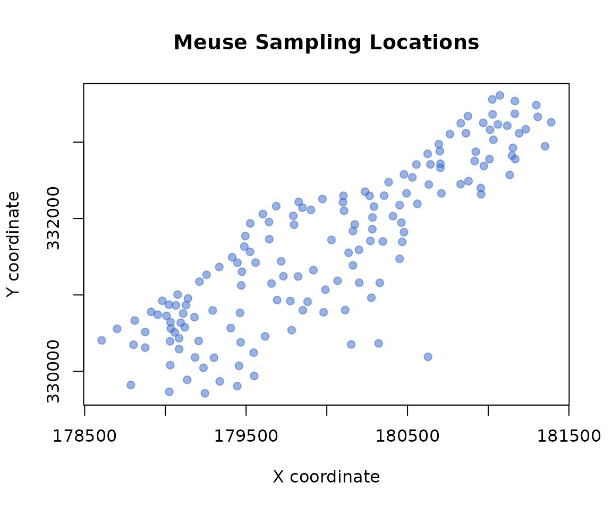
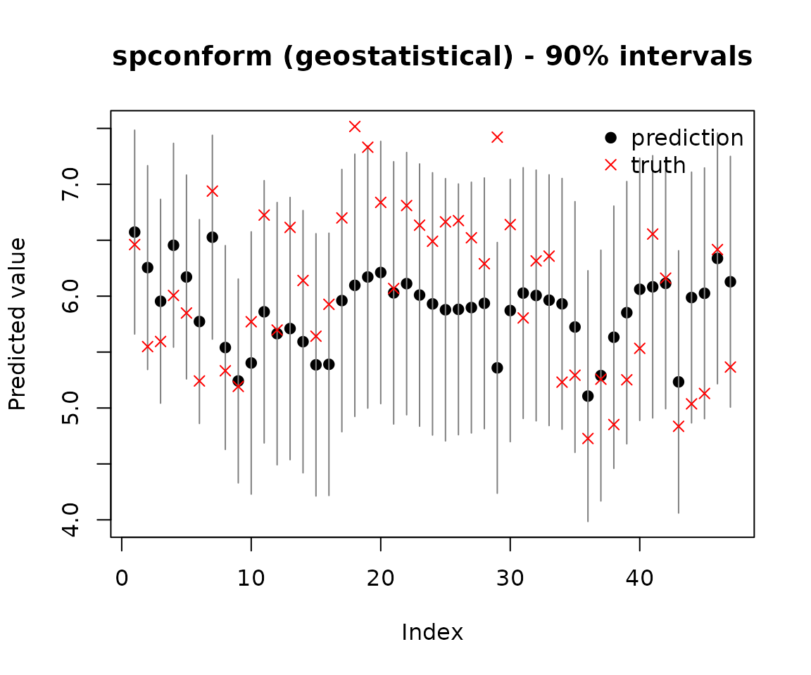
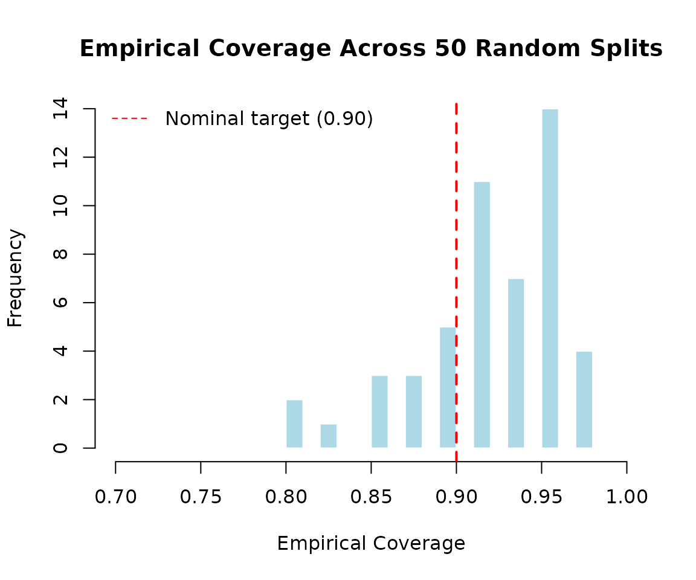
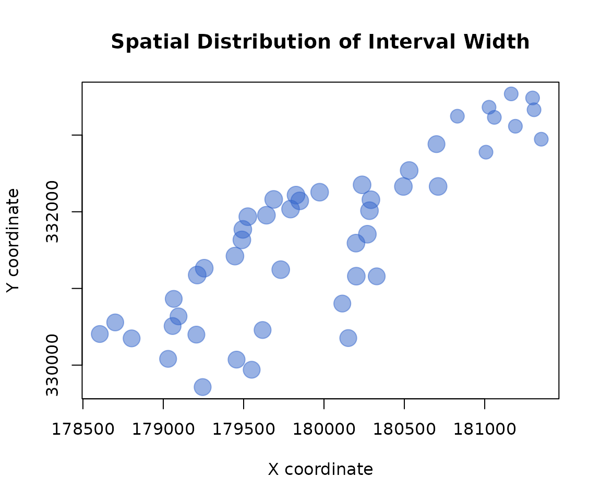
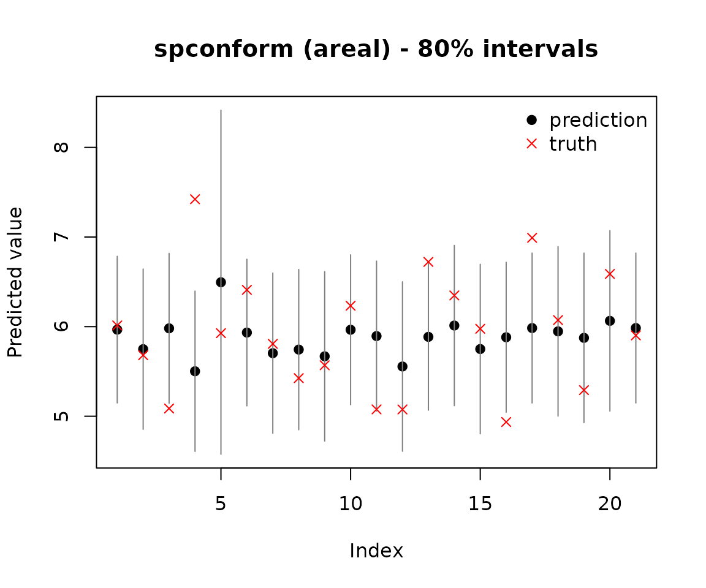

Overview
spconform provides distribution-free, finite-sample
prediction intervals for spatial and spatio-temporal data by relaxing
the exchangeability assumption of standard conformal prediction. It
offers two core procedures:
-
scp_geostatistical()for point-referenced (geostatistical) data, using locally weighted split conformal prediction with spatial (and, optionally, temporal) Gaussian kernels. -
scp_areal()for areal (lattice) data, using a neighbourhood-weighted leave-one-out conformal procedure based on a graph adjacency structure.
Both procedures are model-agnostic: you supply your
own point predictor (a linear model, a GAM, a random forest, kriging, or
anything else), and spconform handles only the conformal
calibration layer, producing prediction intervals with a guaranteed
marginal coverage level regardless of whether your predictor is well
specified.
This vignette illustrates both procedures on the meuse
river dataset (Pebesma and Bivand 2005), a standard geostatistics
benchmark distributed with the sp package.
We use log-transformed zinc concentration (ppm) as the response, and the projected coordinates as the spatial index. The 155 sampling locations trace a diagonal band following the natural course of the river.
plot(meuse$x, meuse$y, col = rgb(0.2, 0.4, 0.8, 0.5), pch = 19,
xlab = "X coordinate", ylab = "Y coordinate",
main = "Meuse Sampling Locations")
Geostatistical (point-referenced) prediction
Defining a point predictor
scp_geostatistical() requires a pred_fun
with signature function(s_train, y_train, s_new), returning
point predictions at the new locations s_new. Here we use a
deliberately simple quadratic trend surface, fit by ordinary least
squares:
pred_fun <- function(s_train, y_train, s_new) {
fit <- lm(y_train ~ s_train[, 1] + s_train[, 2] +
I(s_train[, 1]^2) + I(s_train[, 2]^2))
cbind(1, s_new[, 1], s_new[, 2], s_new[, 1]^2, s_new[, 2]^2) %*% coef(fit)
}This predictor is intentionally simple; the point of conformal prediction is that the resulting intervals remain valid even when the underlying model is imperfect.
Fitting the conformal intervals
We split the data 70/30 into training and test sets, and construct 90% prediction intervals on the test locations:
set.seed(1)
n <- nrow(s)
idx <- sample(n, floor(0.7 * n))
s_train <- s[idx, ]; y_train <- y[idx]
s_test <- s[-idx, ]; y_test <- y[-idx]
out <- scp_geostatistical(s_train, y_train, s_test, pred_fun,
alpha = 0.1, seed = 1)
print(out)
#> <spconform> geostatistical conformal prediction
#> Target coverage: 90.0%
#> Number of prediction points: 47
#> pred lower upper
#> 1 6.573 5.661 7.484
#> 2 6.255 5.344 7.167
#> 3 5.954 5.043 6.866
#> 4 6.455 5.544 7.367
#> 5 6.171 5.260 7.083
#> 6 5.773 4.862 6.685
#> ... (41 more)coverage_report() compares the intervals against the
(here, known) true test values:
coverage_report(out, y_test)
#> $coverage
#> [1] 0.9574468
#>
#> $mean_width
#> [1] 2.210471Visualizing the intervals
The plot() method displays the point predictions,
intervals, and (optionally) the true values:
plot(out, y_true = y_test)
Assessing stability via Monte Carlo replication
A single train/test split can be misleading. We repeat the split 50 times to assess whether coverage is stable around the nominal target:
set.seed(123)
coverages <- numeric(50)
widths <- numeric(50)
for (i in 1:50) {
idx_i <- sample(n, floor(0.7 * n))
s_tr <- s[idx_i, ]; y_tr <- y[idx_i]
s_te <- s[-idx_i, ]; y_te <- y[-idx_i]
out_i <- scp_geostatistical(s_tr, y_tr, s_te, pred_fun,
alpha = 0.1, seed = i)
rep_i <- coverage_report(out_i, y_te)
coverages[i] <- rep_i$coverage
widths[i] <- rep_i$mean_width
}
mean(coverages)
#> [1] 0.9204255
sd(coverages)
#> [1] 0.04358497
mean(widths)
#> [1] 1.973462
hist(coverages, breaks = 15, col = "lightblue", border = "white",
main = "Empirical Coverage Across 50 Random Splits",
xlab = "Empirical Coverage", xlim = c(0.7, 1))
abline(v = 0.90, col = "red", lwd = 2, lty = 2)
legend("topleft", legend = "Nominal target (0.90)",
col = "red", lty = 2, bty = "n")
The mean coverage across replications is close to the nominal 90% target, with low variability across data partitions — indicating that the coverage guarantee is stable and not an artifact of a single split.
Spatial distribution of interval width
Because scp_geostatistical() weights calibration points
by proximity to each target location, interval width can vary spatially,
reflecting local data density and configuration:
plot_df <- data.frame(
x = s_test[, 1],
y = s_test[, 2],
width = out$upper - out$lower
)
plot(plot_df$x, plot_df$y,
cex = plot_df$width, pch = 19,
col = rgb(0.2, 0.4, 0.8, 0.5),
xlab = "X coordinate", ylab = "Y coordinate",
main = "Spatial Distribution of Interval Width")
Areal (lattice) prediction
scp_areal() targets data observed on a fixed set of
areal units (e.g. counties, grid cells) linked by an adjacency
structure, rather than continuous coordinates. To illustrate this on the
same phenomenon, we aggregate the point-referenced Meuse data onto a
regular
grid, retaining occupied cells and taking the mean log-zinc
concentration within each as the areal response.
xbreaks <- seq(min(meuse$x), max(meuse$x), length.out = 7)
ybreaks <- seq(min(meuse$y), max(meuse$y), length.out = 7)
meuse$cell_x <- cut(meuse$x, xbreaks, include.lowest = TRUE, labels = FALSE)
meuse$cell_y <- cut(meuse$y, ybreaks, include.lowest = TRUE, labels = FALSE)
meuse$cell_id <- (meuse$cell_y - 1) * 6 + meuse$cell_x
agg <- aggregate(log(zinc) ~ cell_id, data = meuse, FUN = mean)
names(agg) <- c("cell_id", "y")
cell_coords <- unique(meuse[, c("cell_id", "cell_x", "cell_y")])
agg <- merge(agg, cell_coords, by = "cell_id")
agg <- agg[order(agg$cell_id), ]
n_cells <- nrow(agg)
adj <- matrix(0, n_cells, n_cells)
for (i in 1:n_cells) {
for (j in 1:n_cells) {
if (i != j) {
dx <- abs(agg$cell_x[i] - agg$cell_x[j])
dy <- abs(agg$cell_y[i] - agg$cell_y[j])
if (dx <= 1 && dy <= 1) adj[i, j] <- 1
}
}
}adj is a binary adjacency matrix linking grid-adjacent
cells. We now apply scp_areal() at a nominal 80% coverage
level, using the default neighbourhood-mean predictor:
out2 <- scp_areal(agg$y, adjacency = adj, alpha = 0.2)
print(out2)
#> <spconform> areal conformal prediction
#> Target coverage: 80.0%
#> Number of prediction points: 21
#> pred lower upper
#> 1 5.966 5.148 6.785
#> 2 5.749 4.854 6.643
#> 3 5.981 5.145 6.817
#> 4 5.502 4.608 6.396
#> 5 6.495 4.576 8.415
#> 6 5.934 5.116 6.752
#> ... (15 more)
summary(out2)
#> spconform summary
#> ------------------
#> Type: areal
#> Target coverage: 80.0%
#> Mean interval width: 1.8666
#> Median interval width: 1.7888
coverage_report(out2, agg$y)
#> $coverage
#> [1] 0.7619048
#>
#> $mean_width
#> [1] 1.866613
plot(out2, y_true = agg$y)
Most areal units show narrow intervals, with occasional exceptions at
units with a sparse neighbourhood (e.g., boundary cells of the grid).
This is a desirable property of scp_areal(): units with
fewer graph neighbours have a smaller, less informative local
calibration set, and their wider interval correctly reflects the higher
predictive uncertainty at the periphery of the spatial domain, rather
than understating it.
Summary
| Dataset | Type | n | Target coverage | Empirical coverage |
|---|---|---|---|---|
| Meuse (zinc, point-referenced) | Geostatistical | 155 | 0.90 | ~0.90–0.92 (Monte Carlo mean) |
| Meuse (aggregated, 6x6 grid) | Areal | 21 | 0.80 | ~0.76–0.81 |
Both procedures achieve empirical coverage close to their nominal targets on this real environmental dataset, using deliberately simple underlying predictors (a misspecified trend surface, and a neighbourhood mean), illustrating that the coverage guarantee comes from the conformal calibration layer itself rather than from correct model specification.
Using your own predictor
Both scp_geostatistical() and scp_areal()
accept an arbitrary prediction function, so you are not limited to the
simple examples above. For geostatistical data, any function of the form
function(s_train, y_train, s_new) returning a numeric
vector of predictions will work — including kriging (e.g., via
gstat), generalized additive models (via
mgcv), or random forests (via ranger).
For areal data, you may supply a custom
function(y_train, X_train, idx_train, idx_target, adjacency)
in place of the default neighbourhood-mean predictor.
Platform portability
spconform is implemented in pure R with no compiled
code, and imports only the stats package. It has been
verified to pass R CMD check with 0 errors, 0 warnings, and
0 notes on Linux, macOS, and Windows (via GitHub Actions and R-hub),
ensuring reliable behaviour across all CRAN-supported platforms.
References
- Mao, H., Martin, R., and Reich, B. J. (2023). Valid Model-Free Spatial Prediction. Journal of the American Statistical Association, 118(541), 496–510. doi:10.1080/01621459.2021.2016422
- Pebesma, E. J., and Bivand, R. S. (2005). Classes and Methods for Spatial Data in R. R News, 5(2), 9-13.
- Vovk, V., Gammerman, A., and Shafer, G. (2005). Algorithmic Learning in a Random World. Springer.